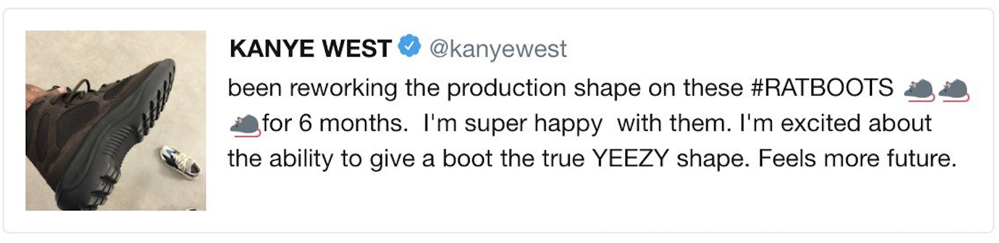
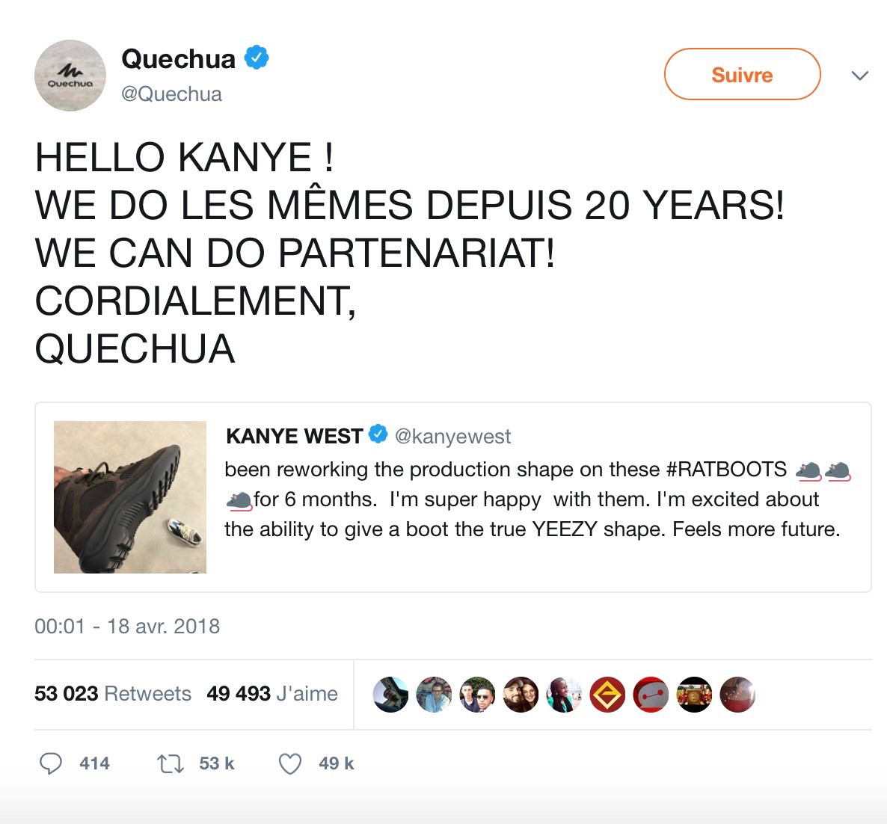

Quand Quechua se moque de Kanye West
Le 17 avril 2018, Kanye West a publié une photo de sa nouvelle paire en production, les Rat Boots. Face à l’engouement provoqué par la marque du rappeur, Quechua s’est exprimée sur un ton humoristique.

Quechua a su créer un buzz retentissant en se moquant d’une publication de Kanye West. Le rappeur détenteur de la marque Yeezy a publié une photo du prochain modèle ressemblant étrangement aux chaussures de randonnée Quechua. Une bonne aubaine pour la marque française !

Le message avait pour objectif de se moquer sans agressivité de la marque américaine ce qui a fait réagir les internautes en nombre. Le tweet de Quechua fut relayé avec plus de 66 000 retweets et 61 000 j’aimes. Avec cette plaisanterie fort appréciée des twittos.